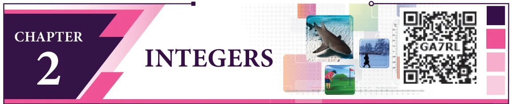
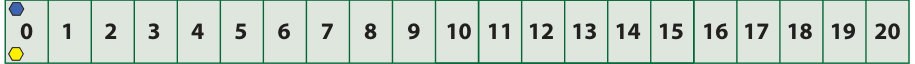
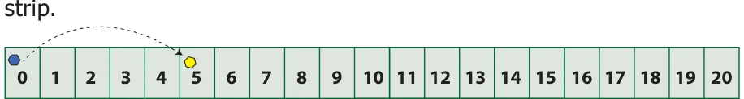
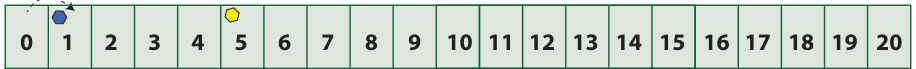
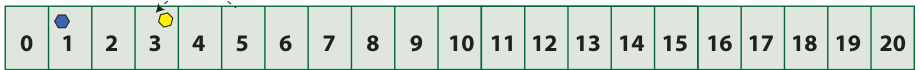
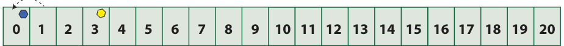
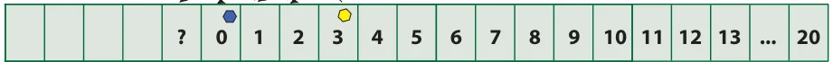
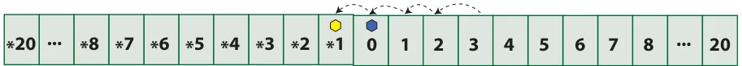
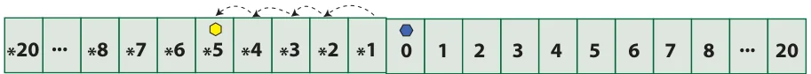
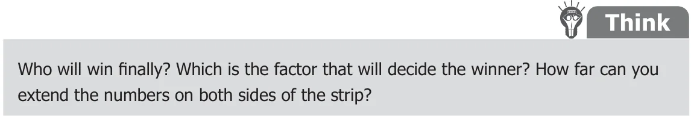

<!DOCTYPE html>
<html lang="en">
<head>
<meta charset="UTF-8">
<meta name="viewport" content="width=device-width,initial-scale=1">
<title>2.1 Introduction — Integers</title>
<meta name="description" content="Class 6 Mathematics · Term 3 · Integers · 2.1 Introduction">
<link rel="icon" href="data:image/svg+xml,<svg xmlns='http://www.w3.org/2000/svg' viewBox='0 0 100 100'><text y='.9em' font-size='90'>📘</text></svg>">
<link rel="stylesheet" href="../../../assets/book.css">
<link rel="stylesheet" href="https://cdn.jsdelivr.net/npm/katex@0.16.11/dist/katex.min.css" crossorigin="anonymous">
</head>
<body>
<header class="topbar">
<div class="topbar-in">
  <div class="crumb">
    <span class="c1"><a href="../../../index.html">Library</a> · <a href="../../index.html">Class 6 Mathematics · Term 3</a></span>
    <span class="c2">Integers · 2.1 Introduction</span>
  </div>
  <a class="tb-btn" data-nav="prev" href="../../01-fractions/12-summary/index.html" title="Summary">←</a>
  <details class="drawer"><summary class="tb-btn" title="Sections in this chapter">☰</summary>
<div class="drawer-panel"><div class="dh">Integers</div><a href="../01-introduction-2.1/index.html" aria-current="page">2.1 Introduction</a><a href="../02-introduction-of-integers-and-its-representation-on-a-numbe-2.2/index.html">2.2 Introduction of Integers and its representation on a number line</a><a href="../03-ordering-of-integers-2.3/index.html">2.3 Ordering of Integers</a><a href="../04-exercise-2.1/index.html">Exercise 2.1</a><a href="../05-exercise-2.2/index.html">Exercise 2.2; Miscellaneous Practice Problems</a><a href="../06-summary/index.html">Summary</a></div></details>
  <a class="tb-btn" data-nav="next" href="../../02-integers/02-introduction-of-integers-and-its-representation-on-a-numbe-2.2/index.html" title="2.2 Introduction of Integers and its representation on a number line">→</a>
  <button class="tb-btn" data-theme-toggle title="Toggle light / dark" aria-label="Toggle light or dark theme">◐</button>
</div>
<div class="progress"><span style="width:28.3%"></span></div>
</header>
<main class="wrap">
<div class="sec-head">
  <p class="eyebrow"><a href="../index.html">Chapter 2 · Integers</a></p>
  <h1>2.1 Introduction</h1>
  <p class="sec-meta">Textbook pages 1–3 · 11 figures</p>
</div>
<article class="prose">
<figure class="fig wide"></figure>
<h2 id="s-learning-objectives">Learning Objectives</h2>
<ul class="qlist">
<li><span class="mk">●</span><span class="lt">To understand the necessity for extension of whole numbers to negative numbers.</span></li>
<li><span class="mk">●</span><span class="lt">To know that the collection of zero, positive and negative numbers forms integers.</span></li>
<li><span class="mk">●</span><span class="lt">To represent integers on the number line.</span></li>
<li><span class="mk">●</span><span class="lt">To compare and arrange integers in ascending and descending order.</span></li>
</ul>
<p>We already have learnt about natural numbers, whole numbers and their properties which were dealt in the first term. Now we shall know about another set of numbers.</p>
<p>Think about the situation</p>
<p>The teacher sees that Yuvan and Subha are ready to play a game with number cards. Blue and yellow coloured tokens are taken so that they represent the position on a number strip which is numbered from 0 to 20 with 0 as the starting point and which can be extended further.</p>
<p>0 1 2 3 4 5 6 7 8 9 10 11 12 13 14 15 16 17 18 19 20 ... ... ...</p>
<p>Also 20 number cards on which the numbers are written from 1 to 10 in black and red colour (10 cards in each) are shuffled and turned upside down to hide the number.</p>
<p>Rules for the game</p>
<ul class="qlist">
<li><span class="mk">i)</span><span class="lt">If a card with number in black is picked, the player should move the token forward</span></li>
</ul>
<p>and if a card with number in red is picked, the player should move the token backward as per the number shown on the card.</p>
<ul class="qlist">
<li><span class="mk">ii)</span><span class="lt">Whoever reaches the number 20 first will be declared as the winner.</span></li>
</ul>
<p>(more students can play this game by choosing different coloured tokens)</p>
<h3 id="s-observe-the-following-conversation">Observe the following conversation</h3>
<p>Yuvan : Subha, I have chosen the blue token. Subha : Okay, Then I shall take the yellow token. Yuvan : The number strip is ready as shown below and let both the tokens be placed at the starting position 0. Shall we start playing?</p>
<figure class="fig wide"></figure>
<p>Subha : Yes. I shall pick a card first. I have picked a card and it shows 5 in black colour. So I will move forward to keep my yellow token at 5 on the number</p>
<figure class="fig wide"></figure>
<p>Yuvan : Now, I pick …It is number 1 in black again. I will keep my blue token by moving one step forward at 1 on the number strip.</p>
<figure class="fig wide"></figure>
<p>Subha : I pick a card now and it shows red colour number 2 on it. I need to move backward by 2 steps and I shall keep my token at 3. Is it correct, Yuvan?</p>
<figure class="fig wide"></figure>
<p>Yuvan : Fine Subha. Now, I have picked the card which shows 1 in red colour. Oh, no..! I have to move backward by one step to be again at the starting position 0.</p>
<figure class="fig wide"></figure>
<p>Subha : I am 3 steps ahead of you! Now, I have the red colour 4 card. I need to move 4 places backward from 3. But,where shall I keep my token, Yuvan? I moved 3 places only but need one more place behind 0. There is no number on the left of 0.</p>
<figure class="fig wide"></figure>
<p>Subha : Shall I mark it as 1 again? Yuvan : No, Subha. That won’t be correct. We know that 1 already exists to the right of 0. Subha : Then, what should I do? I can’t move to the left of '0'. Is the game over or shall I pick another card to continue?</p>
<p>The Teacher intervenes …</p>
<p>Teacher : Yuvan and Subha, why can't you think of extending the number strip to the left of 0 as *1, *2 ,*3 and so on such that the distance between *1 and 0 is the same as the distance between 0 and 1 and also the distance between *2 and 0 is the same as the distance between 0 and 2 and extending likewise?</p>
<p>Subha : Yes Teacher, I understand that the * will now indicate that the numbers are on the left of 0, and also the numbers are less than 0. Teacher : To sustain the interest in the game, continue playing with a small addition in the rule as whoever reaches *20 first, will also be considered as the winner! Yuvan : So Subha, you shall keep it at *1.</p>
<figure class="fig wide"></figure>
<p>Yuvan : What, if you pick the card having red colour number again which shows 4 ? Subha : I am clear Yuvan. I will move backward 4 places from *1 to keep my token at *5.</p>
<figure class="fig wide"></figure>
<p>Yuvan : Well said…! What can you say, assuming that I am at 5? Subha : Yes, Yuvan. We will be at the same distance but on the opposite sides of '0'. Am I right? Yuvan : Yes. you are right but your value is less than mine as you go to the left of '0'.</p>
<figure class="fig wide"></figure>
<p>From the above game, we understand that there is a need to go beyond 0 on to its left! We also observe that as 1 is to the right of 0, there should exist *1 to its left with the same distance as 1 and it extends on both sides in the same way. We generalise this * symbol to ‘ - ’ (minus or negative sign) to denote the numbers less than '0' which conveys the meaning as less, deficit, reduce, down, left, etc.,</p>
<figure class="fig table-fig wide"></figure>
</article>
<nav class="pager"><a class="" data-nav="prev" href="../../01-fractions/12-summary/index.html"><span class="dir">← Previous</span><span class="t">Summary</span><span class="ch">Fractions</span></a><a class="nx" data-nav="next" href="../../02-integers/02-introduction-of-integers-and-its-representation-on-a-numbe-2.2/index.html"><span class="dir">Next →</span><span class="t">2.2 Introduction of Integers and its representation on a number line</span><span class="ch">Integers</span></a></nav>
</main><footer class="site">Generated from the source textbook PDFs · text, figures and exercises belong to their respective publishers.</footer><script defer src="https://cdn.jsdelivr.net/npm/katex@0.16.11/dist/katex.min.js" crossorigin="anonymous"></script>
<script defer src="https://cdn.jsdelivr.net/npm/katex@0.16.11/dist/contrib/auto-render.min.js" crossorigin="anonymous"
  onload="renderMathInElement(document.body,{delimiters:[
    {left:'\\(',right:'\\)',display:false},
    {left:'$$',right:'$$',display:true},
    {left:'\\[',right:'\\]',display:true}],throwOnError:false,ignoredTags:['script','noscript','style','textarea','pre','code']})"></script>
<script src="../../../assets/book.js"></script>
</body>
</html>
